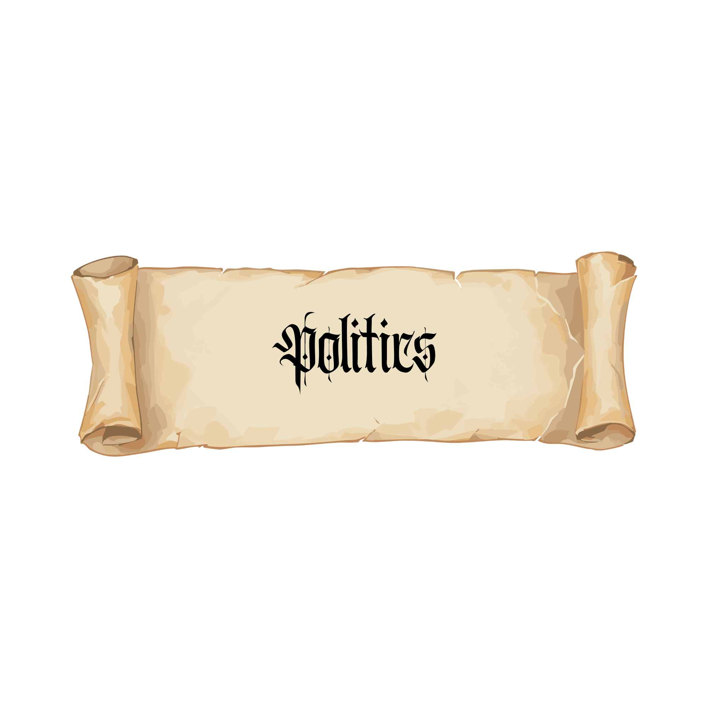

Polictics, religion and culture are complicated aspects to write in a fantasy story. These concepts often interact with each other in nuanced ways, and it is important to consider this when building your world. Creating policial, religious and cultural systems that are complex and affect the way your characters think and act can really bring your world to life!

Many fantasy stories revolve around political conflicts within the fictional world they are set in. Monarchs, lords, and heirs are constantly going to war with each other in order to gain control of the throne. While most of these stories revolve around monarchies, there are many other systems of government avaliable for you to explore. Maybe the country is ruled by a religious oligarchy, or maybe it is one of the only democracies in this universe. Exploring different political systems can make your world feel more complex and interesting. It is also important to consider not only how politics affects those at the top of the pecking order, but those in the lower rungs of society as well. Is the average citizen invested in politics, or are politics something reserved for the elite? Considering these factors can lead to more dynamic and realistic worlds.
Religion is an important element to consider in your fantasy world. In the real world, religion is often a major aspect of an individual's life, and you should remember that wehn writing. You can include all of the god and goddesses that you want, but if your fictional religion does not actually affect how the characters act and think, the religion becomes merely set dressing. People also have varying levels of religiousity, and you should consider this when developing a character's personality. Religion can also have a significant impact on the culture of a setting. What kind of holidays or festivaals do the citizens celebrate? What sort of rituals are important in the practice? Is the society tolerant of other religions, or is there only one acceptable religious practice? Are there multiple factions within the religion? These are important questions to ask when creating a fictional religion.
Culture is a mutifacited idea that deeply affects how people think, act and interact with each other. What are the social expectations in this society? What are the taboos? Is there a caste system, or does this society value equality? How do different cultures react to each other? Is there prejudice against people outside of the culture? Culture can also be expressed through things like art, music and fashion. What is the cultural attitude towards these things? It is also important to remember that, while there are general cultural attitudes, individuals will still have their own beliefs and habits that may go against the cultrual norms. Having a character that challenges these nroms can actually creating very engaging plot lines, especially when pitted against another character that firmly adheres to the cultural expectations of their society.